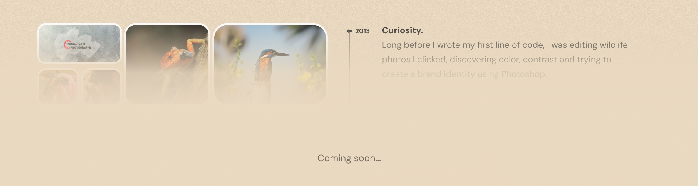

Wireframe • Prototyping • Storyboarding • User Research • Visual Design • Interaction Design • Mockups • Low-fidelity • High-fidelity • Usability Testing
I've been learning by building for almost a decade now. I never really stuck to a single technology, whenever something needed to be fixed, improved or understood I picked up whatever technologies made sense and figured it out on the way.
Download Resume